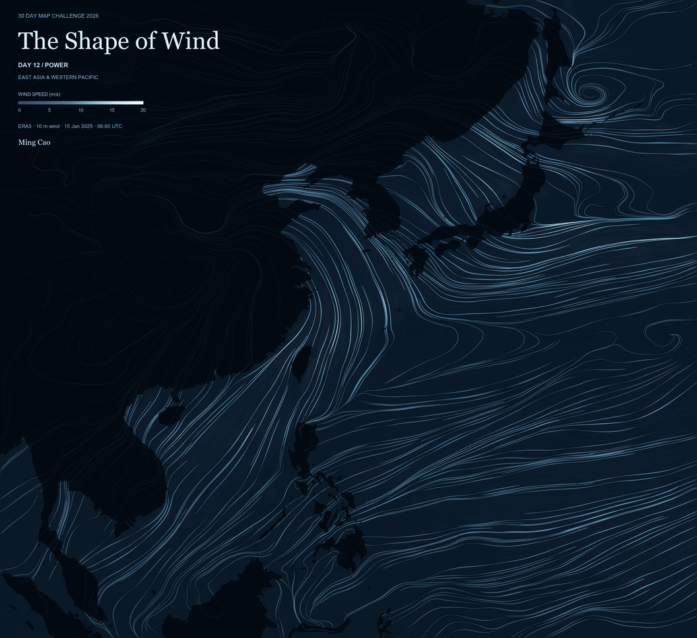
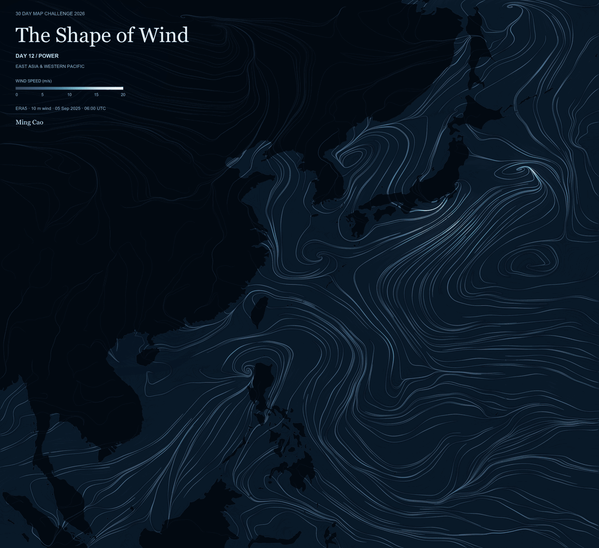

DAY 01 / POINTS
NYC Changing Station Explorer
Public changing-table locations across New York City are mapped from NYC Open Data restroom records and grouped by reported placement.
Python · JavaScript · Leaflet · Playwright

Maps and spatial illustrations by Ming Cao.
DAY 01 / POINTS
Public changing-table locations across New York City are mapped from NYC Open Data restroom records and grouped by reported placement.
Python · JavaScript · Leaflet · Playwright
DAY 02 / LINES
Recorded waterfront paths in Jersey City and Brooklyn are classified by surface and walking-permission tags from OpenStreetMap.
Python · JavaScript · SVG · Pillow

DAY 03 / POLYGONS
Activity spaces and paths in three Jersey City parks are mapped from OpenStreetMap polygons and tags. Separate panels use metric scales and a shared location map.
Python · Pillow · Shapely · pyproj

DAY 04 / MY DATA
Playgrounds and licensed childcare centers in Jersey City and Hoboken are mapped from OpenStreetMap and NJ licensing records. Grouped playgrounds are linked to centers within a 400 m straight-line threshold.
Python · Pillow · Shapely

DAY 05 / SIGHT
Lower Manhattan is illustrated from a waterfront viewpoint using NYC building footprints and roof heights. Separate silhouette layers move at different speeds to create a depth effect.
Python · SVG · Pillow

DAY 06 / VINTAGE
A NYPL harbor chart cataloged as possibly dating to 1844 is overlaid with NYC DCP and OpenStreetMap shorelines. A six-parameter affine transform aligns the historical scan with modern mapped geometry.
Python · Pillow · Shapely · pyproj

DAY 08 / UTOPIA
An imagined neighborhood around Rittenhouse Square is based on OpenStreetMap street and park geometry. Vector-drawn scenes show space for caregivers, children, and everyday activities.
Python · SVG · Pillow

DAY 09 / URBAN-RURAL
Taiwan's twenty most common surnames are shown as population-scaled glyphs using MOI household-registration counts. Schematic placement is combined with NOAA ETOPO depth bands.
Python · SVG · Pillow

DAY 10 / PROMPTING ONLY
UNESCO cultural heritage locations across East Asia are classified by documented historical formation phases. Official site records and reviewed evidence support the component-level map and interactive timeline.
Python · JavaScript · SVG · Pillow

DAY 11 / SENSES: SOUND
Recorded pronunciations of “水” across Cantonese-speaking communities are mapped from Academia Sinica Xiaoxuetang survey records. Initials are encoded by color and finals by categorical wave patterns over Natural Earth and NOAA ETOPO geography.
Python · SVG · Pillow · NumPy
DAY 12 / POWER
ERA5 10 m wind fields from 15 January and 5 September 2025 are shown over East Asia and the western Pacific. RK4 streamlines and brightness animation follow each fixed snapshot, with Natural Earth land as context.
Python · NumPy · Numba · Pillow


DAY 13 / INTERACTIONS
Late-evening home-area associations for the 40th Street area are mapped from Advan Neighborhood Patterns+ records for August and September 2025. CBG-level contributions and statistical links represent scaled associations, not unique visitors or observed routes.
R · JavaScript · Leaflet · SVG · Microsoft Edge